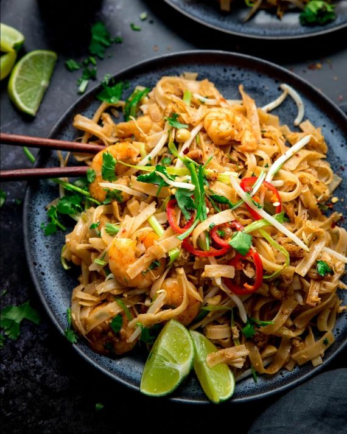

Pad Thai is a dish of rice noodles with eggs, vegetables and prawns sautéed in a wok to form a delicious meal.

Ingredients:
- 175g flat rice noodles
- 1 tsp sesame oil
- 50g potted brown shrimp
- 1 ½ tbsp vegetable oil
- ¼ tsp salt
- pinch of garlic salt
- 20 large raw king prawns
- 3 garlic cloves
- ½ tsp dried chilli flakes
- 2 eggs
- 2 tbsp fish sauce
- 1 tsp tamarind paste
- 2 tbsp sweet chilli sauce
- 1 tbsp soft brown sugar
- 2 tsp shrimp paste
- 2 tbsp dark soy sauce
- 40g roasted peanuts
- 4 spring onions
- 100g fresh bean sprouts
- 2 tbsp chopped coriander
Method:
- Boil a large pan of water and add the noodles. Turn off the heat and leave to stand for 3-4 minutes before draining, and rinsing with cold water. Drizzle on the sesame oil and toss together.
- Heat a large wok over a high heat. Add the potted shrimp in butter, vegetable oil, salt and garlic salt. Fry for 2-3 minutes until lightly golden.
- Remove the shrimp with a spoon and place in a bowl - leaving the oil in the wok.
- Add the king prawns, garlic and dried chilli flakes to the oil in the wok. Fry for 2-3 minutes until the king prawns just start to turn pink.
- Whisk the eggs together and add to the prawns.
- Fry, stirring often with a spatula until the eggs are just scrambled.
- Turn down the heat to medium and add the noodles, potted shrimp, fish sauce, tamarind paste, sweet chilli sauce, sugar, shrimp paste and soy sauce.
- Toss everything together, heating for about 5 minutes, until the noodles are hot. Keep the noodles moving around the wok to stop them sticking.
- Add the peanuts, spring onions, beansprouts and coriander.
- Toss together and cook for a further 1-2 minutes, until the beansprouts are just heated through.
- Serve with lime wedges and top with fresh red chillies and chopped peanuts.